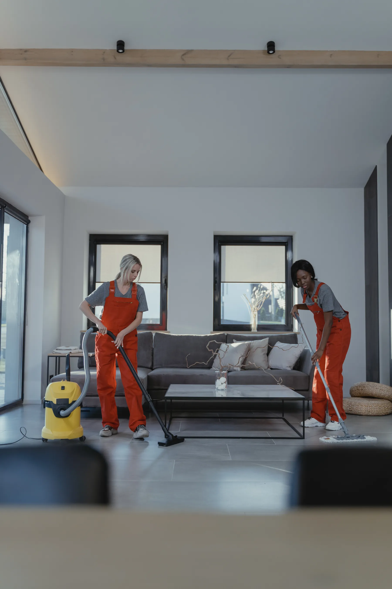
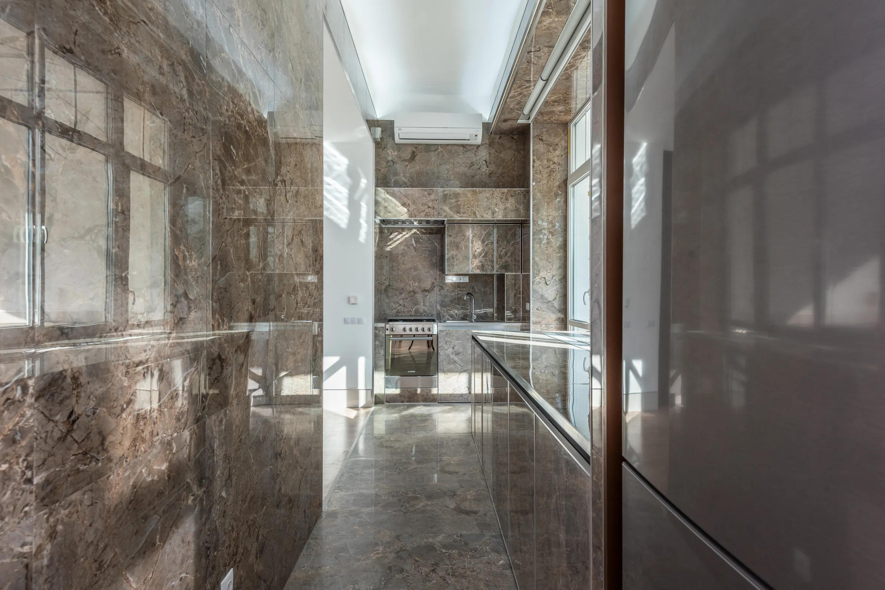

Porosity Diagnosis
We analyze tile glaze density, grout joint condition, and soil composition before matching temperature, PSI, and cleaning chemistry.

Advanced 230°F thermal extraction, non-toxic bio-emulsification, and penetrating fluoropolymer sealants engineered for high-traffic residences and commercial facilities.
Interactive Simulation
Drag the industrial hydro-rotary machine head to see how deep thermal steam extraction and 900 PSI counter-rotating agitation lift compacted soil and grease from porous tile and grout.
 After · 230°F Steam Extracted & Sealed
Before · Soil & Grease Buildup
After · 230°F Steam Extracted & Sealed
Before · Soil & Grease Buildup
Engineered Cleaning System
Traditional mops simply redistribute dirty water into porous grout seams. Our enclosed rotary extraction system rinses, breaks down grease, and pulls contaminants out under continuous negative pressure.
We analyze tile glaze density, grout joint condition, and soil composition before matching temperature, PSI, and cleaning chemistry.
Plant-derived alkaline pre-treatments break down aged oils, sticky cooking residues, and soap scum deposits without harsh acid fumes.
Dual orbital heads deliver 230°F heated water at 900 PSI inside a sealed hood, immediately vacuuming all loosened grime to a closed recovery tank.
Micro-molecular fluoropolymer impregnator fills microscopic grout voids to prevent future moisture, food stains, and soil penetration.
Specialized Programs
From high-volume commercial corridors to private residential spaces, our certified technicians deliver pristine, lasting results.

CommercialEngineered for corporate lobbies, medical facilities, restaurants, and retail spaces requiring high-output cleaning and rapid turnaround.
Explore Program DetailsTargeted elimination of deep-set shower mildew, hard water scaling, and yellowed grout on delicate marble, mosaic, and subway tiles.
Explore Program Details
DegreasingHigh-thermal grease breakdown designed for food prep zones, restaurant kitchen floors, and busy home dining areas.
Explore Program Details Restoration
Restoration
Restore patchy or permanently discolored grout with customizable color seal barriers that lock in uniform tone and repel future spills.
Explore Program DetailsProven Performance
We combine laboratory-tested chemistry with industrial extraction to deliver verified surface hygiene and lasting aesthetic value for every client.
Verified through post-service surface swab testing on high-porosity ceramic and unsealed grout.
Trusted across residential estates, medical suites, and premier commercial facilities.
High-CFM moisture recovery vacuums ensure zero prolonged dampness or downtime.
We stand behind every square foot cleaned with our comprehensive touch-up warranty.
The PureGrout Method
Every restoration follows a calibrated 4-phase sequence designed to protect surrounding surfaces and achieve peak soil extraction.
We inspect tile glaze, evaluate joint depth, and provide a binding upfront quote with zero hidden charges.
Baseboards and hardwood boundaries are masked. Plant-safe bio-emulsifiers are agitated into grout lines.
Enclosed orbital extraction heads pass seam by seam, rinsing and lifting loosened soil under negative pressure.
A penetrating breathable fluoropolymer sealant is applied, followed by a detailed client walkthrough.
Client Experiences
See why property managers, interior designers, and homeowners turn to PureGrout for restorative surface care.
“PureGrout restored 4,200 sq ft of high-traffic corporate plaza tile overnight. We opened at 8 AM with spotless, bone-dry floors and zero chemical smell.”
“When renovating luxury homes, contractors often suggest replacing dirty tile. PureGrout restored the original grout lines to perfection, preserving the client's investment.”
“The color seal completely revived our 12-year-old kitchen floor. The grout looks brand new and cooking spills simply bead up on top. Extraordinary service.”
Common Inquiries
Have questions about how we treat your specific tile material or schedule commercial jobs? Find answers here or reach out directly.
Ask Our SpecialistsWe use pH-neutral, non-acidic bio-cleaners specifically calibrated for calcium-based stones like marble, travertine, and limestone. Our low-pressure rotary scrubbers lift soil without micro-scratching or etching the polished surface.
Never. Because our 230°F thermal rinse operates with simultaneous closed-loop vacuum extraction, 99% of all solution and emulsified soil is removed instantly. The floor dries neutral with zero sticky film to re-attract dirt.
Our industrial extraction system leaves floors dry to light foot traffic within 45 to 60 minutes. We routinely perform night, weekend, and after-hours commercial services so your business opens on schedule with zero interruption.
Clear penetrating sealer absorbs into the grout capillaries to protect against liquids while preserving the existing grout color. Color seal is an opaque, durable polymer formula that permanently recolors discolored or stained grout to your chosen uniform shade while offering maximum stain protection.
For typical residential homes, a professional deep clean and seal inspection every 12 to 18 months keeps floors immaculate. High-traffic commercial properties (such as restaurants, retail, and offices) typically schedule semi-annual or quarterly maintenance.
Ready to Transform Your Surfaces?
Contact our certified specialists today for an upfront estimate and experience the difference of precision thermal extraction.